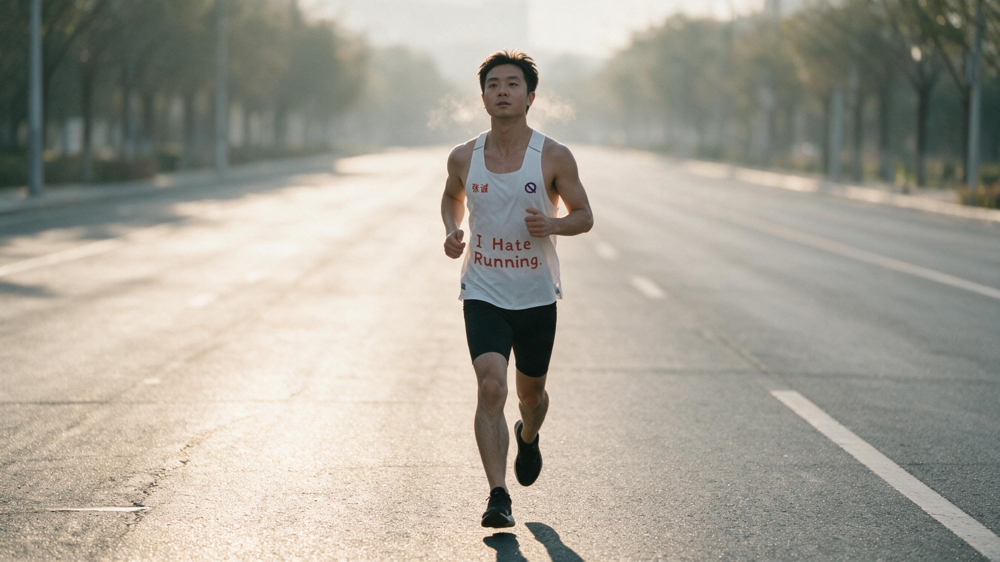

戒烟，身体比意志更诚实

戒烟从来不是一场意志力的战役——是身体先于你，做出了选择。
背景：来自我十年烟龄、最终成功戒烟的经验。
你注意过吗？吸烟的人，在什么状态下会特别讨厌香烟？
我自己的体会是，有两种状态。第一种，是生病的时候。鼻炎严重、重感冒打点滴那几天，我完全吸不了烟。身体虚弱到极点，烟不再带来任何愉悦，反而被本能地排斥。
第二种，是剧烈运动之后。如果你长期跑步，一定有过这种感受：跑完步，点起一根烟，发现它一点好处都没有——身体在自然地拒绝它。
这两种排斥，都不是意识能控制的。它是身体在脆弱或强健的临界点，自动发出的免疫反应。
身体比你诚实得多：它虚弱到一定程度，或强壮到一定程度，都会主动拒绝香烟。
你以为你在用意志戒烟的每一天，身体其实早就替你做好了选择。
我特别不相信「意志力」和「坚持」这类词。它们太虚了，像是把一切问题都推给「你不够强」。
过去我尝试过很多次戒烟，几乎全部失败。每一次失败，我都陷入深深的自责：别人不抽烟，是因为他们优秀；而我戒不掉，是因为我有问题。
这种想法让我对自我产生怀疑，甚至像鸵鸟一样，把头埋进沙子里——不去看、不去想，以此换取片刻的心理舒适。
用意志力对抗烟瘾，只会把一次失败，变成对整个人格的否定。
我不相信意志，我相信习惯。
想无痛戒烟，最好的方式不是硬扛，而是通过一项运动，让身体重新焕发活力。
当身体充满活力，它会自然被好的东西吸引——清新的空气、清晨的光、自然的美。同时，它也会自然排斥香烟这种负能量的东西。
吸烟，本质是一个涉及口腔和肺部的呼吸行为。而跑步，恰恰是长时间的有氧呼吸。在这种滋养下，肺和喉咙越来越健康，身体整体走向积极——你会从生理上，开始厌恶烟。
正能量与负能量无法共存，就像磁铁的两极相斥。
当你进入更高能量的生活轨道，旧习惯自然失去吸引力。
2025 年，我跑了 2000 公里，参加了 10 场半程马拉松。在这之后，我的戒烟过程变得顺利、丝滑。
我抽了十年烟，最终成功戒掉了。所以我能做到，所有人都能做到。
戒烟从来不是意志的胜利，而是生活方式的升级——不是战胜欲望，而是升级系统。
行为不等于身份，失败不等于本质缺陷。你需要的不是更强的意志，而是更好的生活。
俗到极致即为雅，雅得过头便是俗——是谓雅俗共赏。